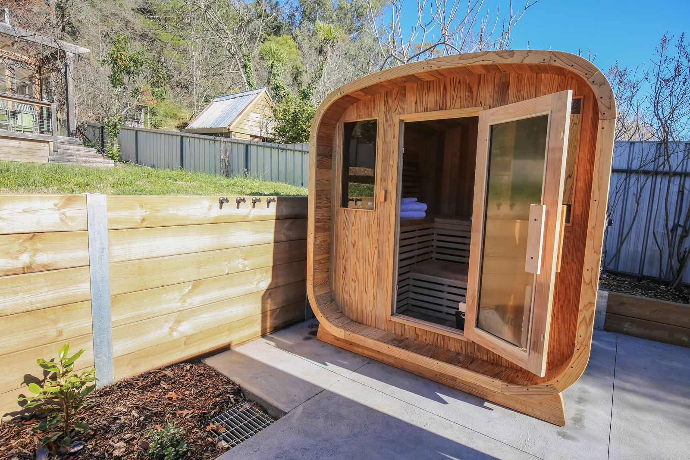
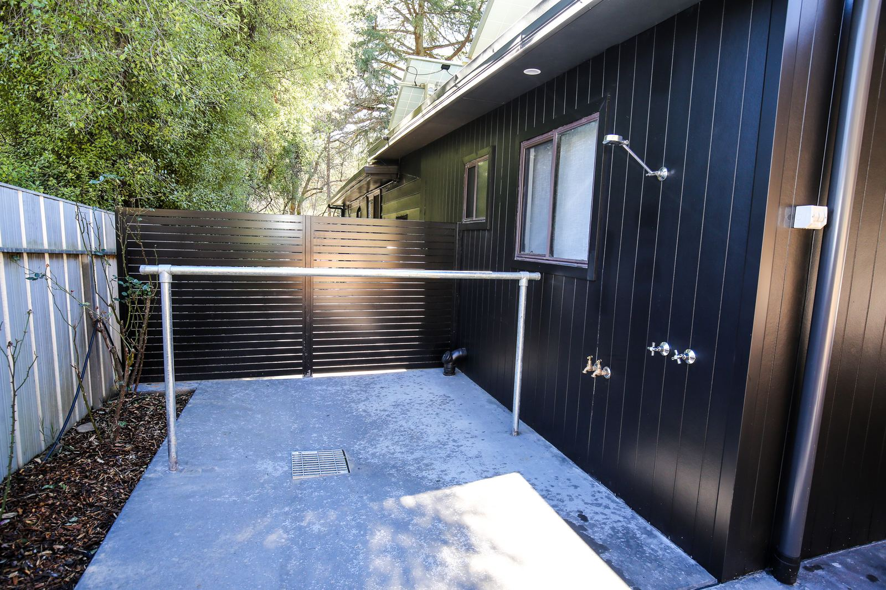
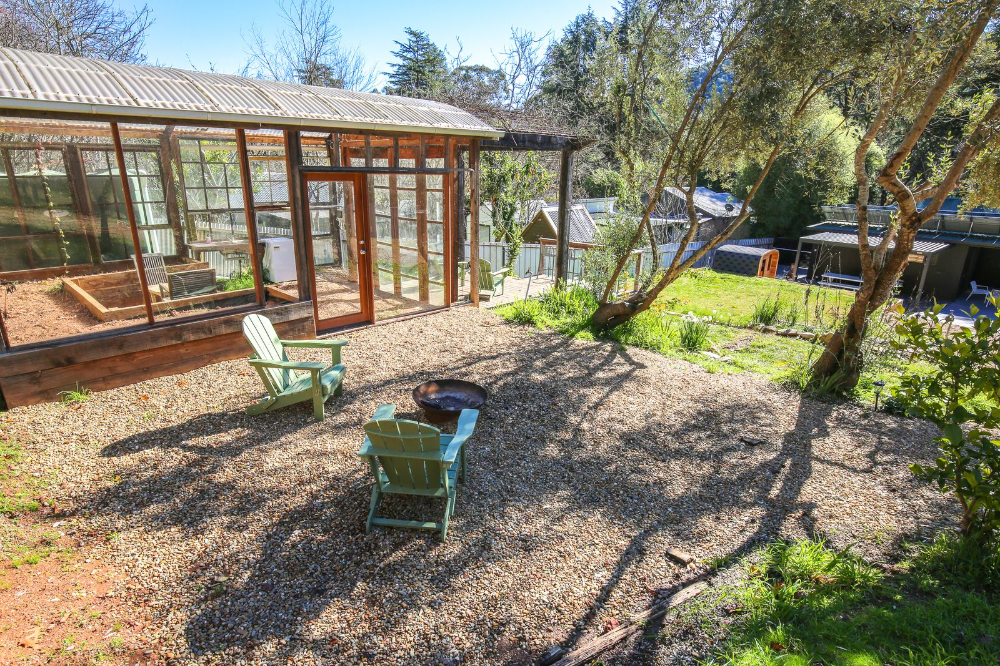
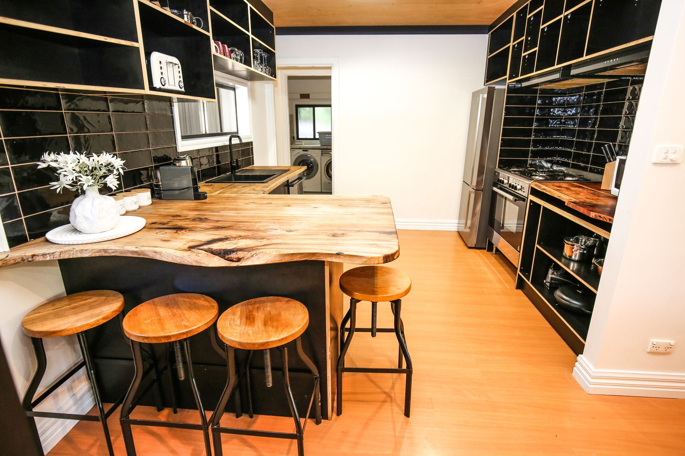
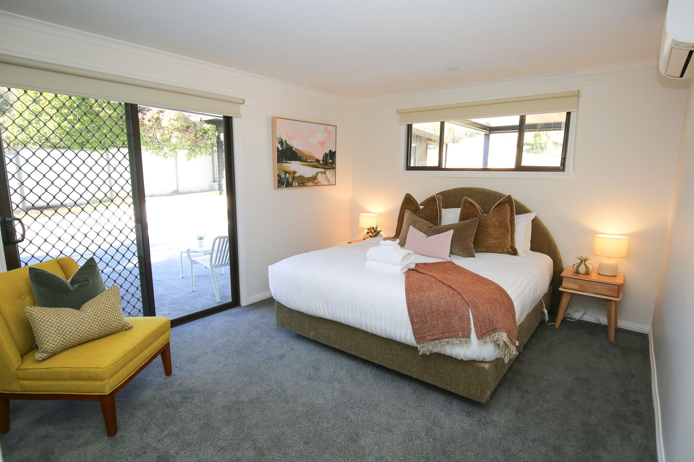

A house in Bright with a private outdoor sauna
A private outdoor electric sauna that seats six, ready in about 30 minutes. Three bedrooms, sleeps six, two dogs welcome.

- 6 seat private sauna
- 6 guests
- 3 bedrooms
- 2 bathrooms
- 3 car spaces
- 2 dogs welcome
Stoke and Steam is a holiday house at 112 Delany Ave, Bright, in Victoria's High Country: self-contained accommodation for up to six people and two dogs, with a private outdoor sauna, two wood fires and a lockable garage for bikes. The whole house is yours, and nobody else is on site.
Sauna, fires and outdoor living
Heat up, rinse off under the outdoor shower, then sit by the fire pit or one of the two enclosed wood fires.
- Private outdoor electric sauna that seats six, ready in about 30 minutes, and a hot and cold outdoor shower next to it, for your group only
- Two enclosed wood fires: one in the living room and one in the garage lounge. Firewood is supplied from April to September
- Fire pit and chiminea
- Covered alfresco area with a gas BBQ and an outdoor table for eight
- Glasshouse with a timber deck and mountain views


Inside
- Sleeps six: two king bedrooms (one with an ensuite and yard access) and a room with two single beds
- Two bathrooms, with an oversized bath and walk-in showers
- Fully equipped kitchen with a gas cooktop, and a dining table for eight
- Garage lounge: a second living room with two three-seater couches, a smart TV and a wood fire
- Three smart TVs, free wifi, heating and air conditioning in the living area and every bedroom
- Washing machine and clothes dryer. Portacot (bring your own cot linen) and high chair

Dogs
Two dogs welcome, per AVG's pet policy. A gate at the back of the fully fenced yard opens onto walking tracks in the state forest; dogs are welcome on a lead. Dogs can be inside while you're home; when you go out they come with you. No dogs on furniture, beds or carpet.
Bikes, gear, cars and getting around
- A garage that locks separately from the house, with six wall racks for mountain bikes and e-bikes, an e-bike charging point by the racks, and a dedicated bike wash area with a hose, tap, work stand and floor pump
- A drying room set-up in the laundry: a 10 L/day desiccant dehumidifier, two drying racks and a boot and glove dryer, and the door shuts, so wet gear is dry by morning — snow gear, riding kit, walking boots or a rainy week's washing
- myenergi EV charger (22 kW three-phase, tethered Type 2 cable) in the front driveway, free for staying guests
- A few bikes for general use
- Off-street parking for three cars
- 12 minutes' walk to the edge of town and the nearest cafés (about 19 to the town centre), 5 to the river
More about the bike garage, the wash area and the drying room
Bedrooms and guest numbers
The whole house is yours, and nobody else is on site. Bedrooms are made up to match your group: for 1 to 4 guests, two bedrooms are open and the third is closed; for 5 or 6 guests, all three are open. If a smaller group wants the third bedroom, ask us and we can open it for a small fee. Different arrangements apply to stays of five nights or more.
"Us" here means Alpine Valley Getaways, who make up the house for each booking.


The house through the year
- Autumn: mid-April to early May
- Bright's autumn colour usually peaks then, and the timing varies from year to year.
- Late May to mid-June
- The quiet weeks between the autumn colour and the snow. Cold evenings, which suit the sauna and both wood fires. Firewood is supplied from April to September.
- Winter: June to early October
- Snow season at Mount Hotham and Falls Creek. The drying room set-up in the laundry is for the end of those days.
- Spring: September to November
- Blossom, mild riding and walking weather, and quiet midweek nights. The back gate opens onto walking tracks in the state forest, and there's a bike wash area and a lockable garage for the end of a ride.
- Summer: December to February
- Riding, then swimming in the Ovens River, 5 minutes' walk away, then the outdoor shower and dinner under the covered alfresco.
Security cameras
There are three exterior security cameras: one on the driveway and front entrance, one on the wood pile, and one on the rear fence line facing the bush behind the property. None covers the sauna, outdoor shower, alfresco area, yard seating or any indoor space.